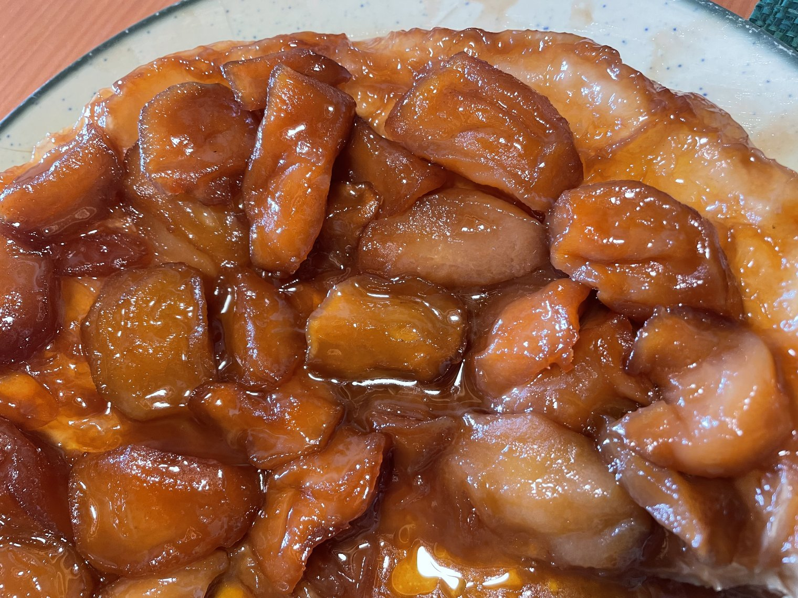

Tarta Tatin de manzana
Ingredients
- 150 g de harina
- 60 g de mantequilla
- 1 huevo o 50ml de agua
- 0.5 cdta de sal
- 5 -6 manzanas rojas
- 1 cda de canela
- 50 g de mantequilla sin sal
- 150 g de azúcar blanco

Preparación
Paso 1
Para la masa quebrada (molde de 22cm de diámetro): tamizar 150 g de harina en un bol, añadir 60 g de mantequilla en trozos y mezclar con los dedos hasta que quede como migas.
Paso 2
Añadir 1 huevo o 50ml de agua y 0.5 cdta de sal y seguir mezclando hasta que se forme una bola. Envolver en papel film y dejar 30min en la nevera.
Paso 3
Para el relleno: pelar 5 -6 manzanas rojas y quitarles el corazón. Partirlas en 4 y mezclarlas con 1 cda de canela (opcional).
Paso 4
En una sartén grande u olla baja a fuego medio, poner 50 g de mantequilla sin sal y 150 g de azúcar blanco y remover bien hasta que se mezclen y se vaya creando un caramelo.
Paso 5
Incorporar las manzanas y revolverlas en el caramelo. Bajar el fuego al mínimo y dejar que se cuezan 15min para que queden blanditas.
Paso 6
Precalentar el horno a 180ºC. Sacar la masa quebrada y estirarla con un rodillo.
Paso 7
Untar el molde con mantequilla y colocar las manzanas caramelizadas bien apretadas, de manera que no queden huecos. Cubrirlas con la masa estirada, presionando bien en el molde.
Paso 8
Hornear 25-30min, hasta que la masa empiece a dorarse. Sacarla del horno y esperar 5min antes de darle la vuelta.